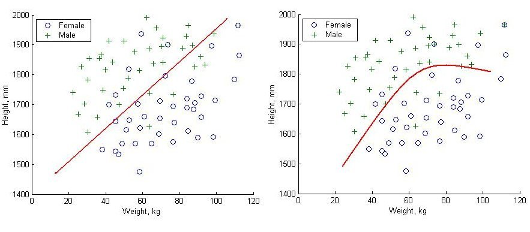
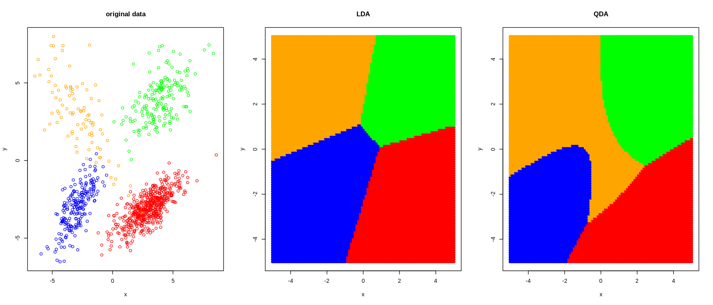

4 Classification / supervised learning
4.1 Supervised learning vs. unsupervised learning
Unsupervised learning:
For data \(\boldsymbol x_1, \ldots, \boldsymbol x_n\) find classes / labels groups \(y_1, \ldots, y_n\) attached to each sample \(\boldsymbol x_i\).
For example, if \(\boldsymbol x_2\) is assigned the label \(y=5\) this means sample 2 belongs to class 5.
If \(y\) is discrete unsupervised learning is called clustering.
Supervised learning:
Training data available with labels: \(\{\boldsymbol x_1^{train}, y_1^{train}\}\), \(\ldots\), \(\{\boldsymbol x_n^{train}, y_n^{train} \}\). Each \(\boldsymbol x_i^{train} = (x_{i1}^{train}, \ldots, x_{id}^{train} )^T\) contains the observations of \(d\) properties (predictor variables) of the sample \(i\).
The training data (observations of predictors variables and response/labels) are used to determine a predictor function \(f(\boldsymbol x)\). This function is then used to predict the unknown labels / class \(y^{test}\) of new data \(\boldsymbol x^{test}\) in a probabilistic fashion, i.e. with probabilities attached to the predicted outcome.
Thus, in contrast to unsupervised learning, supervised learning includes a training step with actual data with known labels.
For \(y\) discrete supervised learning is called classification.
Note the similarity to regression (especially for continuous response \(y\))! In fact, supervised learning is (generalised) regression.
4.2 Terminology
The function \(f(\boldsymbol x)\) that predicts the class \(y\) is called a classifier. There are many types of classifiers, we focus here primarily on probabilistic classifiers (i.e. those that output the predicted class along with a probability). In supervised learning the classifier is learned from the training data.
The challenge is to find a classifier that explains the current training data well and that also generalises well to future unseen data. Note that it is relatively easy to find a predictor that explains the training data but especially in high dimensions (i.e. with many predictors) there is often overfitting and then the predictor does not generalise well!
The classifier describes the decision boundary between the classes:

In general, simple decision boundaries are preferred over complex decision boundaries to avoid overfitting!
Some commonly used probabilistic methods for classifications: QDA (quadratic discriminant analysis), LDA (linear discriminant analysis), DDA (diagonal discriminant analysis), Naive Bayes classification, logistic regression, GPs (Gaussian processes).
Common non-probabilistic methods include: SVM (support vector machine), logistic regression, random forest, neural networks.
Depending on how the classifiers are trainined there are many variations of the above methods, e.g. Fisher discriminant analysis, regularised LDA, shrinkage disciminant analysis etc.
4.3 Bayesian discriminant rule or Bayes classifier
4.3.1 General model
Same setup as with mixture models:
- \(K\) groups with \(K\) prespecified
- each group has its own distribution \(F_k\) with own parameters \(\boldsymbol \theta_k\)
- the density of each class is \(f_k(\boldsymbol x) = f(\boldsymbol x| k)\).
- prior probability of group \(k\) is \(\text{Pr}(k) = \pi_k\) with \(\sum_{k=1}^K \pi_k = 1\)
- marginal density is the mixture \(f(\boldsymbol x) = \sum_{k=1}^K \pi_k f_k(\boldsymbol x)\)
The posterior probability of group \(k\) is then \[ \text{Pr}(k | \boldsymbol x) = \frac{\pi_k f_k(\boldsymbol x) }{ f(\boldsymbol x)} \]
The discriminant function is the logarithm of the posterior probability: \[ d_k(\boldsymbol x) = \log \text{Pr}(k | \boldsymbol x) = \log(\pi_k) + \log(f_k(\boldsymbol x) ) - \log(f(\boldsymbol x)) \] Since we use \(d_k\) to compare the different classes \(k\) we can simplify the discriminant function by dropping all constant terms that do not depend on \(k\) - in the above \(\log(f(\boldsymbol x))\). Hence we get for the Bayes discriminant function \[ d_k(\boldsymbol x) = \log(\pi_k) + \log(f_k(\boldsymbol x) ) \]
This provides us with the probability of each class given the test data \(\boldsymbol x\). For subsequent “hard” classification we need to use a decision rule, such as selecting the group \(\hat{k}\) for that which the group probability / value of discriminant function is maximised: \[ \hat{k} = \arg \max_k d_k(\boldsymbol x) \,. \]
You have already encountered the Bayes classifier in the EM algorithm to predict the state of the latent variables. In a simplied versions it also plays a role in the \(K\)-means algorithm.
The Bayes classifier reduces to the likelihood classifier (see example class 3) if one assumes that prior probabilities \(\pi_k\) do not depend on \(k\) (and hence are uniform).
4.3.2 Quadratic discriminant analysis (QDA) and Gaussian assumption
Quadratic discriminant analysis (QDA) is a special case of the Bayes classifier when all densities are multivariate normal with \(f_k(\boldsymbol x) = N(\boldsymbol x| \boldsymbol \mu_k, \boldsymbol \Sigma_k)\).
This leads to the discriminant function for QDA: \[ d_k^{QDA}(\boldsymbol x) = -\frac{1}{2} (\boldsymbol x-\boldsymbol \mu_k)^T \boldsymbol \Sigma_k^{-1} (\boldsymbol x-\boldsymbol \mu_k) -\frac{1}{2} \log \det(\boldsymbol \Sigma_k) +\log(\pi_k) \]
There are a number of noteworthy things here:
- Again terms are dropped that do not depend on \(k\), such as \(-\frac{d}{2}\log( 2\pi)\).
- Note the appearance of the Mahalanobis distance between \(\boldsymbol x\) and \(\boldsymbol \mu_k\) in the last term — recall \(d^{Mahalanobis}(\boldsymbol x, \boldsymbol \mu| \boldsymbol \Sigma) = (\boldsymbol x-\boldsymbol \mu)^T \boldsymbol \Sigma^{-1} (\boldsymbol x-\boldsymbol \mu)\).
- The QDA discriminant function is quadratic in \(\boldsymbol x\) - hence its name!
This implies that the decision boundaries for QDA classification are quadratic (i.e. parabolas in two dimensional settings). Thus QDA is a non-linear classification method!
For Gaussian models specifically it can useful be to multiply the discriminant function by -2 to get rid of the factor \(-\frac{1}{2}\), but note that in that case we then need to look for the minimum of the simplified discriminant function rather than the maximum: \[ d_k^{QDA (v2)}(\boldsymbol x) = (\boldsymbol x-\boldsymbol \mu_k)^T \boldsymbol \Sigma_k^{-1} (\boldsymbol x-\boldsymbol \mu_k) + \log \det(\boldsymbol \Sigma_k) -2 \log(\pi_k) \] In the literature you will find both versions of Gaussian discriminant functions so you need to check carefully which convention is used. In the following we will use the first version only.
4.3.3 Linear discriminant analysis (LDA)
LDA is a special case of QDA, with the assumption of common overall covariance across all groups: \(\boldsymbol \Sigma_k = \boldsymbol \Sigma\).
This leads to a simplified discriminant function: \[ d_k^{LDA}(\boldsymbol x) = -\frac{1}{2} (\boldsymbol x-\boldsymbol \mu_k)^T \boldsymbol \Sigma^{-1} (\boldsymbol x-\boldsymbol \mu_k) +\log(\pi_k) \] Note that term containing the log-determinant is now gone, and that LDA is essentially now a method that tries to minimize the Mahalanobis distance (while taking also into account the prior class probabilities).
The above function can be further simplified, by noting that the quadratic term \(\boldsymbol x^T \boldsymbol \Sigma^{-1} \boldsymbol x\) does not depend on \(k\) and hence can be dropped: \[ \begin{split} d_k^{LDA}(\boldsymbol x) &= \boldsymbol \mu_k^T \boldsymbol \Sigma^{-1} \boldsymbol x- \frac{1}{2}\boldsymbol \mu_k^T \boldsymbol \Sigma^{-1} \boldsymbol \mu_k + \log(\pi_k) \\ &= \boldsymbol b^T \boldsymbol x+ a \end{split} \] Thus, the LDA discriminant function is linear in \(\boldsymbol x\), and hence the resulting decision boundaries are linear as well (i.e. straight lines in two-dimensional settings). LDA is a linear classification method.
Comparison of decision boundary of LDA (left) compared with QDA (right):

Note that logistic regression (cf. GLM module) takes on exactly the above linear form and is indeed closely linked with the LDA classifier.
4.3.4 Diagonal discriminant analysis (DDA) and naive Bayes classifier
In DDA we assume the same setting as LDA, but now we simplify even further by assuming a diagonal covariance containing only the variances: \[ \boldsymbol \Sigma= \boldsymbol V= \begin{pmatrix} \sigma^2_{1} & \dots & 0\\ \vdots & \ddots & \vdots \\ 0 & \dots & \sigma^2_{d} \end{pmatrix} \] This simplifies the inversion of \(\boldsymbol \Sigma\) as \[ \boldsymbol \Sigma^{-1} = \boldsymbol V^{-1} = \begin{pmatrix} \sigma^{-2}_{1} & \dots & 0\\ \vdots & \ddots & \vdots \\ 0 & \dots & \sigma^{-2}_{d} \end{pmatrix} \] and leads to the discriminant function \[ \begin{split} d_k^{DDA}(\boldsymbol x) &= \boldsymbol \mu_k^T \boldsymbol V^{-1} \boldsymbol x- \frac{1}{2}\boldsymbol \mu_k^T \boldsymbol V^{-1} \boldsymbol \mu_k + \log(\pi_k) \\ &= \sum_{j=i}^d \frac{\mu_{k,j} x_j - \mu_{k,j}^2/2}{\sigma_d^2} + \log(\pi_k) \end{split} \] As special case of LDA, the DDA classifier is a linear classifier.
The Bayes classifier (using any distribution) assuming uncorrelated predictors is known as the naive Bayes classifier. Hence, DDA is a naive Bayes classifier assuming underlying Gaussian distributions.
However, don’t let you misguide because of the name “naive”: in fact DDA and other “naive” Bayes classfier are often very effective classifiers, especially in high-dimensional settings!
4.4 The training step — learning QDA, LDA and DDA classifiers from data
In order to predict the class for new data using any of the above discriminant functions we need to first learn the underlying parameters from the training data \(\boldsymbol x_i^{\text{train}}\) and \(y_i^{\text{train}}\):
- For QDA, LDA and DDA we need to learn \(\pi_1, \ldots, \pi_K\).
- For QDA we additionally require \(\boldsymbol \Sigma_1, \ldots, \boldsymbol \Sigma_K\)
- For LDA we need \(\boldsymbol \Sigma\)
- For DDA we estimate \(\sigma^2_1, \ldots, \sigma_d\).
To obtain the above parameter estimates we use the labels \(y_i^{\text{train}}\) to sort the samples \(\boldsymbol x_i^{\text{train}}\) into the corresponding classes, and then apply the usual estimators. Let \(G_k =\{i: y_i^{\text{train}}=k \}\) be the set of all indices of training sample belonging to group \(k\).
Then to obtain the ML estimate of the group means \(k=1, \ldots, K\) we compute \[ \hat{\boldsymbol \mu}_k = \frac{1}{n_k} \sum_{i \in g_k} \boldsymbol x_i^{\text{train}} \] Note this differs (for \(K > 1\)) from the the estimate of the global mean \(\boldsymbol \mu_0\) that we get if we were to ignore the group labels (i.e. if we assume there is only a single class): \[ \hat{\boldsymbol \mu}_0 = \frac{1}{n} \sum_{i=1}^n \boldsymbol x_i^{\text{train}} \]
In order to get the ML estimate of the pooled variance \(\boldsymbol \Sigma\) we use \[ \widehat{\boldsymbol \Sigma}^{ML} = \frac{1}{n} \sum_{k=1}^K \sum_{i \in g_k} ( \boldsymbol x_i^{\text{train}} -\hat{\boldsymbol \mu}_k) ( \boldsymbol x_i^{\text{train}} -\hat{\boldsymbol \mu}_k)^T \] Note that the pooled variance \(\boldsymbol \Sigma\) (with \(K>1\)) differs (substantially!) from the global variance \(\Sigma_0\) that results from ignoring class labels (or in the single class case): \[ \widehat{\boldsymbol \Sigma}_0^{ML} = \frac{1}{n} \sum_{i =1}^n ( \boldsymbol x_i^{\text{train}} -\hat{\boldsymbol \mu}_0) ( \boldsymbol x_i^{\text{train}} -\hat{\boldsymbol \mu}_0)^T \] You will recognise the above from the variance decomposion in mixture models, with \(\boldsymbol \Sigma_0\) being the total variance and the pooled \(\boldsymbol \Sigma\) the unexplained/with-in group variance.
Overall, the total number of parameters to be estimated when learning the discriminant functions from training data is as follows:
- QDA: \(K+ K d + K \frac{d(d-1)}{2}\)
- LDA: \(K+ d + \frac{d(d-1)}{2}\)
- DDA: \(K+d\)
We also need to make sure that the estimated covariance matrices are all positive definite (which for DDA is automatically guaranteed if all variances are positive).
If \(d\) (and \(K\)) is small and the number of available samples \(n\) is large then we can use maximum likelihood as sketched above to estimate the parameters.
However, if \(d\) is large compared to the sample size then the numbers of parameters to estimate grows very quickly. Especially QDA but also LDA is quite data hungry and ML estimation becomes an ill-posed problem. We thus need to use a regularised estimator for the covariance(s) such as penalised ML, Bayes, shrinkage estimator, cf. Section 1.5 and the Statistical Methods module.
Also, to reduce the number of parameters it is advised to used either LDA or DDA in rather than QDA. Often this has a beneficial effect because a simpler model will generalise better and avoid overfitting.
In the application to high-dimensional data we will employ in the computer labs a regularised version of LDA and DDA using the Stein-type shrinkage estimator of the covariance discussed in Section 1.5. Both are is implemented in the R package “sda”.
4.5 Comparison of decision boundaries: LDA vs. QDA
Non-nested case (\(K=4\))

Note the linear decision boundaries for LDA!
Nested case (\(K=2\)):

There is no linear classifier that can seperate two nested classes!
4.6 Goodness of fit and variable selection
As in linear regression (cf. “Statistical Methods” module) we are interested in finding out whether the fitted mixture model is an appropriate model, and which particular predictor(s) \(x_j\) from \(\boldsymbol x=(x_1, \ldots, x_d)^T\) are responsible prediction the outcome, i.e. for categorizing a sample into group \(k\).
In order to study these problem it is helpful to rewrite the discriminant function to highlight the influence (or importance) of each predictor.
We focus on linear methods (LDA and DDA) and first look at the simple case \(K=2\) and then generalise to more than two groups.
4.6.1 LDA with \(K=2\) classes
For two classes using the LDA discriminant rule will choose group \(k=1\) if \(d_1^{LDA}(\boldsymbol x) > d_2^{LDA}(\boldsymbol x)\), or equivalently, if \[ \Delta_{12}^{LDA} = d_1^{LDA}(\boldsymbol x) - d_2^{LDA}(\boldsymbol x) > 0 \] Since \(d_k(\boldsymbol x)\) is the log-posterior (plus/minus identical constants) \(\Delta^{LDA}\) is in fact the log-posterior odds of class 1 versus class 2 (see Statistical Methods, Bayesian inference).
The difference \(\Delta_{12}^{LDA}\) is \[ \underbrace{ \Delta_{12}^{LDA}}_{\text{log posterior odds}} = \underbrace{(\boldsymbol \mu_1 -\boldsymbol \mu_2)^T \boldsymbol \Sigma^{-1} \left(\boldsymbol x- \frac{\boldsymbol \mu_1+\boldsymbol \mu_2}{2}\right)}_{\text{log Bayes factor } \log B_{12}} + \underbrace{\log\left( \frac{\pi_1}{\pi_2} \right)}_{\text{log prior odds}} \] Note that since we only consider simple non-composite models here the log-Bayes factor is identical with the log-likelihood ratio!
The log Bayes factor \(\log B_{12}\) is known as the weight of evidence in favour of \(F_1\) given \(\boldsymbol x\). The expected weight of evidence assuming \(\boldsymbol x\) is indeed from \(F_1\) is the Kullback-Leibler discrimination information in favour of group 1, i.e. the KL divergence of from distribution \(F_2\) to \(F_1\): \[ \text{E}_{F_1} ( \log B_{12} ) = KL(F_1 || F_2) = \frac{1}{2} (\boldsymbol \mu_1 -\boldsymbol \mu_2)^T \boldsymbol \Sigma^{-1} (\boldsymbol \mu_1 -\boldsymbol \mu_2) = \frac{1}{2} \Omega^2 \] This yields, apart of a scale factor, a population version of the Hotelling \(T^2\) statistic defined as \[T^2 = c^2 (\hat{\boldsymbol \mu}_1 -\hat{\boldsymbol \mu}_2)^T \hat{\boldsymbol \Sigma}^{-1} (\hat{\boldsymbol \mu}_1 -\hat{\boldsymbol \mu}_2)\] where \(c = (\frac{1}{n_1} + \frac{1}{n_2})^{-1/2} = \sqrt{n \pi_1 \pi_2}\) is a sample size dependent factor (for \(\text{SD}(\hat{\boldsymbol \mu}_1 - \hat{\boldsymbol \mu}_2)\)). \(T^2\) is a measure of fit of the underlying two-component mixture.
Using the whitening transformation with \(\boldsymbol z= \boldsymbol W\boldsymbol x\) and \(\boldsymbol W^T \boldsymbol W= \boldsymbol \Sigma^{-1}\) we can rewrite the log Bayes factor as \[ \begin{split} \log B_{12} &= \left( (\boldsymbol \mu_1 -\boldsymbol \mu_2)^T \boldsymbol W^T \right)\, \left(\boldsymbol W\left(\boldsymbol x- \frac{\boldsymbol \mu_1+\boldsymbol \mu_2}{2}\right) \right) \\ &=\boldsymbol \omega^T \boldsymbol \delta(\boldsymbol x) \end{split} \] i.e. as the product of two vectors:
- \(\boldsymbol \delta(\boldsymbol x)\) is the whitened \(\boldsymbol x\) (centered around average means) and
- \(\boldsymbol \omega= (\omega_1, \ldots, \omega_d)^T = \boldsymbol W(\boldsymbol \mu_1 -\boldsymbol \mu_2)\) gives the weight of each whitened component \(\boldsymbol \delta(\boldsymbol x)\) in the log Bayes factor.
A large positive or negative value of \(\omega_j\) indicates that the corresponding whitened predictor is relevant for choosing a class, whereas small values of \(\omega_j\) close to zero indicate that the corresponding ZCA whitened predictor is unimportant. Furthermore, \(\boldsymbol \omega^T \boldsymbol \omega= \sum_{j=1}^d \omega_j^2 = (\boldsymbol \mu_1 -\boldsymbol \mu_2)^T \boldsymbol \Sigma^{-1} (\boldsymbol \mu_1 -\boldsymbol \mu_2) = \Omega^2\), i.e. the squared \(\omega_j^2\) provide a component-wise decomposition of the overall fit \(\Omega^2\).
Choosing ZCA-cor as whitening transformation with \(\boldsymbol W=\boldsymbol P^{-1/2} \boldsymbol V^{-1/2}\) we get \[ \boldsymbol \omega^{ZCA-cor} = \boldsymbol P^{-1/2} \boldsymbol V^{-1/2} (\boldsymbol \mu_1 -\boldsymbol \mu_2) \] A better understanding of \(\boldsymbol \omega^{ZCA-cor}\) is provided by comparing with the two-sample \(t\)-statistic \[ \hat{\boldsymbol \tau} = c \hat{\boldsymbol V}^{-1/2} (\hat{\boldsymbol \mu}_1 - \hat{\boldsymbol \mu}_2) \] With \(\boldsymbol \tau\) the population version of \(\hat{\boldsymbol \tau}\) we can define \[\boldsymbol \tau^{adj} = \boldsymbol P^{-1/2} \boldsymbol \tau= c \boldsymbol \omega^{ZCA-cor}\] as correlation-adjusted \(t\)-scores (cat scores). With \(({\hat{\boldsymbol \tau}}^{adj})^T {\hat{\boldsymbol \tau}}^{adj} = T^2\) we can see that the cat scores offer a component-wise decomposition of Hotelling’s \(T^2\).
Note the choice of ZCA whitening is to ensure that the whitened components are interpretable and stay maximally correlated to the original variables. However, you may also choose, e.g. PCA whitening, in which case the \(\boldsymbol \omega^T \boldsymbol \omega\) provide the variable importance for the PCA whitened variables.
For DDA, which assumes that correlations among predictors vanish, i.e. \(\boldsymbol P= \boldsymbol I_d\), we get \[ \Delta_{12}^{DDA} =\underbrace{ \left( (\boldsymbol \mu_1 -\boldsymbol \mu_2)^T \boldsymbol V^{-1/2} \right)}_{\text{ } c^{-1} \boldsymbol \tau^T }\, \underbrace{ \left( \boldsymbol V^{-1/2} \left(\boldsymbol x- \frac{\boldsymbol \mu_1+\boldsymbol \mu_2}{2}\right) \right) }_{\text{centered standardised predictor}}+ \log\left( \frac{\pi_1}{\pi_2} \right) \\ \] Similarly as above, the \(t\)-score \(\boldsymbol \tau\) determines the impact of the standardised predictor in \(\Delta^{DDA}\).
Consequently, in DDA we can rank predictors by the squared \(t\)-score. Recall that in standard linear regression with uncorrelated predictors we can find the most important predictors by ranking the squared marginal correlations – ranking by (squared) \(t\)-scores in DDA is the exact analogy but for discrete response.
4.6.2 Multiple classes
For more than two classes we need to refer to the so-called pooled centroids formulation of DDA and LDA (introduced by Tibshirani 2002).
We define the pooled centroid as \(\boldsymbol \mu_0 = \sum_{k=1}^K \pi_k \boldsymbol \mu_k\) — this is the centroid if there would be only a single class. The corresponding frequency is \(\pi_0=1\) and the distribution is called \(F_0\).
The LDA discriminant function for this “group 0” is \[ d_0^{LDA}(\boldsymbol x) = \boldsymbol \mu_0^T \boldsymbol \Sigma^{-1} \boldsymbol x- \frac{1}{2}\boldsymbol \mu_0^T \boldsymbol \Sigma^{-1} \boldsymbol \mu_0 \] and the log posterior odds for comparison of group \(k\) with the pooled group \(0\) is \[ \begin{split} \Delta_k^{LDA} &= d_k^{LDA}(\boldsymbol x) - d_0^{LDA}(\boldsymbol x) \\ &= \log B_{k0} + \log(\pi_k) \\ &= \boldsymbol \omega_k^T \boldsymbol \delta_k(\boldsymbol x) + \log(\pi_k) \end{split} \] with \[ \boldsymbol \omega_k = \boldsymbol W(\boldsymbol \mu_k - \boldsymbol \mu_0) \] and \[ \boldsymbol \delta_k(\boldsymbol x) = \boldsymbol W(\boldsymbol x- \frac{\boldsymbol \mu_k +\boldsymbol \mu_0}{2} ) \] The expected log Bayes factor is \[ \text{E}_{F_k} ( \log B_{k0} )= KL(F_k || F_0) = \frac{1}{2} (\boldsymbol \mu_k -\boldsymbol \mu_0)^T \boldsymbol \Sigma^{-1} (\boldsymbol \mu_k -\boldsymbol \mu_0) = \frac{1}{2} \Omega_k^2 \]
With scale factor \(c_k = (\frac{1}{n_k} - \frac{1}{n})^{-1/2} = \sqrt{n \frac{\pi_k}{1-\pi_k}}\) (for \(\text{SD}(\hat{\boldsymbol \mu}_k-\hat{\boldsymbol \mu}_0)\), with the minus sign before \(\frac{1}{n}\) due to correlation between \(\hat{\boldsymbol \mu}_k\) and pooled mean \(\hat{\boldsymbol \mu}_0\)) we get as correlation-adjusted \(t\)-score for comparing mean of group \(k\) with the pooled mean \[ \boldsymbol \tau_k^{adj} = c_k \boldsymbol \omega_k^{ZCA-cor} \,. \]
For the two class case (\(K=2\)) we get with \(\boldsymbol \mu_0 = \pi_1 \boldsymbol \mu_1 + \pi_2 \boldsymbol \mu_2\) for the mean difference \((\boldsymbol \mu_1 - \boldsymbol \mu_0) = \pi_2 (\boldsymbol \mu_1 - \boldsymbol \mu_2)\) and with \(c_1 = \sqrt{n \frac{\pi_1}{\pi_2}}\) this yields \[ \boldsymbol \tau_1^{adj} = \sqrt{n \pi_1 \pi_2 } \boldsymbol P^{-1/2} \boldsymbol V^{-1/2} (\boldsymbol \mu_1 - \boldsymbol \mu_2) , \] i.e. the exact same score as in the two-class setting.
4.6.3 Choosing a threshold
From the above it is clear that in LDA and DDA the natural score to rank features with regard to importance in the predictor is the (squared) \(t\)-score (no correlation) or the squared correlation-adjusted \(t\)-score.
In order to determine a suitable threshold one can use any standard technique, such as multiple testing multiple testing or FDR thresholding.
In Computer Lab 4 we will perform feature selection on an example data set using both the \(t\)-score and the correlation-adjusted \(t\)-score.
This will also show that using feature selection it is often possible to construct compact models with fewer predictors that still generalise and predict well.
For large and high-dimensional models feature selection can also be viewed as a form of regularisation and also dimension reduction. Specifically, if there are many variables/ features that do no contribute to the prediction they can still deterioriate the overall predictive accuracy (sometimes dramatically) so these “noise variables” need to be filtered out in order to be able to construct good models and classifiers.
4.7 Estimating prediction error
4.7.1 Quantifying prediction error
For any prediction model we are interested in the predictive performance. We quantify the performance by comparing the prediction \(\hat{y}\) with the true output \(y\) (assumed to be known).
For continuous response often the squared loss is used: \[ \text{err}(\hat{y}, y) = (\hat{y} - y)^2 \]
For binary outcomes one often employs the 0/1 loss: \[ \text{err}(\hat{y}, y) = \begin{cases} 1, & \text{if } \hat{y}=y\\ 0, & \text{otherwise} \end{cases} \] but we can of course use any other quantity derived from the confusion matrix (containing TP, TN, FP, FN).
The mean prediction error is then the expectation \[ PE = \text{E}(\text{err}(\hat{y}, y)) \] and thus the empirical mean prediction error is \[ \widehat{PE} = \frac{1}{m} \sum_{i=1}^m \text{err}(\hat{y}_i, y_i) \] where \(m\) is the sample size of the test data (different from the training data used to construct the model!!).
Alternatively and more generally, we can also quantify prediction error in the framework of so-called proper scoring rules, where the whole probabilistic forecast is taken into account (e.g. the individual probabilities for each class, rather than just the selected most probable class). A commonly used scoring rule is the negative log-probability (“surprise”), and the expected surprise is the cross-entropy (cf. Statistical Methods module). So this leads back to entropy and likelihood.
Once we have an estimate of the prediction error of a model we can use this error to choose among the models (including models with different numbers of features).
4.7.2 Estimation of prediction error without test data
Unfortunately, quite oten we do not have any test data available to evaluate a classifier.
In this case we need to rely on a simple algorithmic procedure called cross-validation.
Idea:
- split the samples in the training data into a number (say \(K\)) parts (“folds”)
- use each of the \(K\) folds as test data and the other \(K-1\) folds as training data
- average over the resulting \(K\) estimates of prediction error
Note that in each case one part of the data is reserved for testing and not used for training.
We choose \(K\) such that the folds are not too small (to allow estimation of prediction error) but also not too large (to make sure that we actually train a good classifier from the remaining data). A typical value for \(K\) is 5 or 10.
In Computer labs 4 and 5 we employ cross-validation to estimate prediction accuracy and model selection.
Relevant reading for the technical details: Section 5.1 Cross-Validation in James et al. (2013) An introduction to statistical learning with applications in R. Springer.
References
James, G., D. Witten, T. Hastie, and R. Tibshirani. 2013. An Introduction to Statistical Learning with Applications in R. Springer. http://faculty.marshall.usc.edu/gareth-james/ISL/.